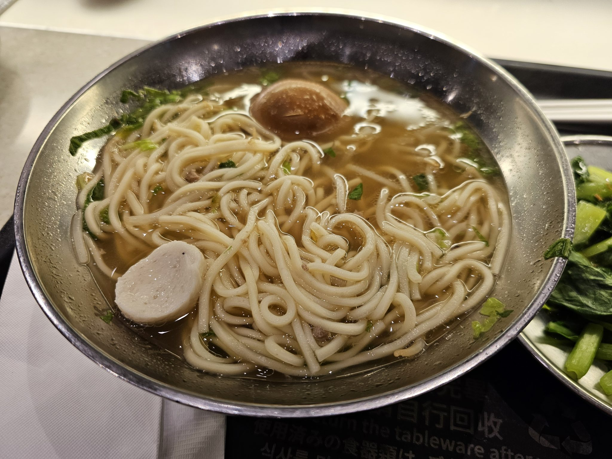
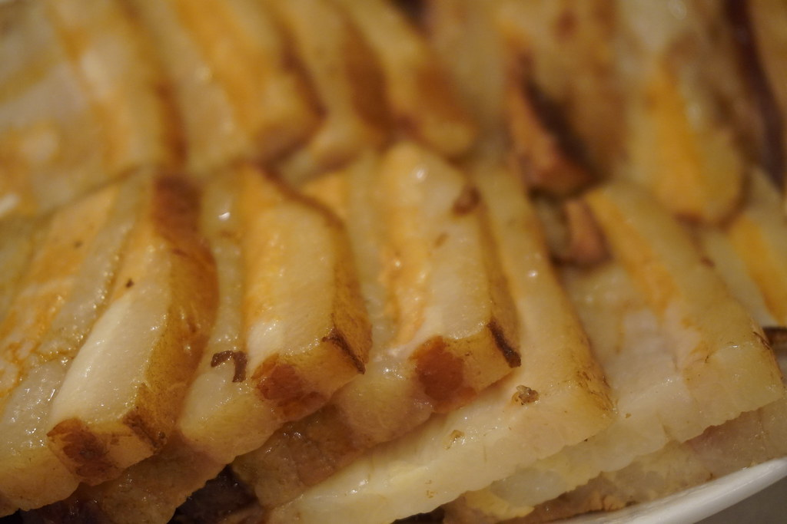

群馬県高崎市、中華蕎麦 あお木
炭と醤油が香る、
一杯の輪郭。
炭火の香りと醤油だれ、煮干しのだしを、静かに一杯へ重ねています。



炭火と醤油だれ、煮干しの香り
中華蕎麦という一杯には、スープ・麺・具材それぞれに積み重ねた手間があります。あお木では、その一つひとつを丁寧に仕込んでいます。
スープ
炭火を思わせる香りと醤油だれを、じっくりと合わせています。
麺
スープとのなじみを大切に、コシのある麺を選んでいます。
具材
シンプルな一杯になるよう、具材も丁寧に仕込んでいます。
仕込みへの想いを、もっと詳しくご紹介しています。
中華蕎麦を中心に
あお木の中心となるのは、醤油と煮干しの香りを大切にした中華蕎麦です。メニューの詳しい内容は現在準備中のため、下記は一般的な中華蕎麦店の構成例としてご覧ください。
メニューの方向性を、もっと詳しくご紹介しています。
お客様の声(イメージ例)
※実際のお客様の声ではなく、イメージ例として作成した内容です
★★★★★
煮干しの香りがしっかり効いたスープに、コシのある麺がよく合っていました。中華蕎麦という名前の通り、昔ながらの落ち着いた一杯という感じで、年齢を問わず好まれる味だと思います。
ほかのお客様の声(イメージ例)もご紹介しています。